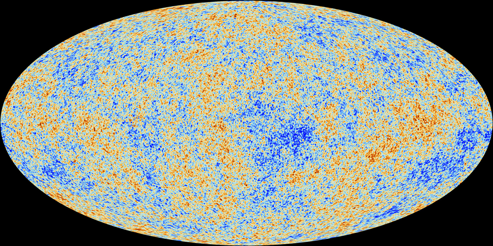

Bilde: ESA/PlanckForrige side🙂 🙁Mørk materie

Størrelsen på fluktuasjonene i den kosmiske bakgrunnsstrålingen bekrefter at det trengs omkring 85% mørk materie for å danne de strukturene vi idag ser i universet.
Samtidig så setter nukleosyntesen, perioden i universets tidlige historie da de første atomkjernene ble dannet, en grense for hvor mye ’vanlig materie’ som kan eksistere. Hvis det hadde eksistert betydelig mer vanlig materie (som reagerer med partikler i standardmodellen gjennom andre krefter enn gravitasjon), så hadde vi hatt en helt annen sammensetning av grunnstoffer i universet idag.
Dette forteller oss at den mørke materien må bestå av partikler som reagerer svært svakt med andre partikler, unntatt gjennom gravitasjon da vi jo ’ser’ den mørke materien gjennom gravitasjonspåvirkning av andre legemer. Hvis en partikkel skal sende ut/absorbere fotoner, må den kunne virke med elektromagnetiske krefter, gjør den ikke det, så blir den ’mørk’. I standardmodellen har vi kun en slik partikkel som virker svært svakt gjennom andre krefter enn gravitasjon: nøytrinoet. Kan mørk materie være nøytrinoer???Neste side